15 R Módulo 7 - Modelos lineares generalizados (GLMs)
RESUMO
Até este ponto, assumimos que a variância é constante e que os erros seguem uma distribuição normal. Entretanto, para muitos tipos de dados, uma ou ambas essas suposições não são válidas. Se quisermos que nossas análises sejam imparciais e que nossas interpretações sejam cientificamente corretas, precisamos de métodos capazes de lidar com essas situações. Em dados de contagem, por exemplo, nos quais a variável resposta assume valores inteiros e frequentemente há muitos zeros no conjunto de dados, a variância pode aumentar linearmente com a média. Em dados de proporção, nos quais registramos tanto o número de sucessos quanto o número de fracassos de um evento, a variância apresenta uma relação em forma de U invertido com a média. Já quando a variável resposta segue uma distribuição gama (como em dados de tempo até a morte ou tempo até a ocorrência de um evento), a variância aumenta mais rapidamente do que de forma linear em relação à média. Assim, na prática, os dados frequentemente apresentam outros tipos de padrões de relação entre média e variância (veja Crawley (2005) e (2015)), de onde esse capítulo é baseado). A maneira de tratar todos esses problemas dentro de um único arcabouço teórico foi desenvolvida por John Nelder (NELDER; WEDDERBURN, 1972), que denominou essa abordagem de Modelos Lineares Generalizados (Generalized Linear Models), ou simplesmente GLMs (originalmente chamados de glims).
15.0.1 Por que precisamos de Modelos Lineares Generalizados?
Os Modelos Lineares Generalizados (Generalized Linear Models – GLMs) representam uma extensão dos modelos lineares clássicos, permitindo analisar uma ampla variedade de tipos de dados encontrados em Biologia, Ecologia e Ciências Ambientais (DUNN; SMYTH, 2018; MCCULLAGH; NELDER, 1989).
Até este ponto, foram apresentados métodos como o teste t, ANOVA, correlação de Pearson e regressão linear simples. Todos esses métodos pertencem à família dos modelos lineares e compartilham um conjunto de pressupostos que devem ser atendidos para que as inferências estatísticas sejam válidas.
Em uma regressão linear simples, por exemplo, assume-se que:
- a variável resposta é contínua;
- os resíduos seguem uma distribuição Normal;
- existe uma relação linear entre a variável resposta e os preditores;
- a variância dos resíduos é constante (homocedasticidade).
Quando essas premissas são atendidas, a regressão linear fornece estimativas confiáveis e de fácil interpretação. Entretanto, muitos conjuntos de dados biológicos não apresentam essas características.
Na Ecologia, por exemplo, é comum trabalhar com variáveis resposta como:
- número de espécies;
- abundância de indivíduos;
- presença ou ausência de uma espécie;
- proporção de sobrevivência;
- porcentagem de cobertura vegetal;
- concentração de nutrientes;
- biomassa de organismos.
Essas variáveis frequentemente apresentam distribuições diferentes da Normal, além de relações entre média e variância incompatíveis com a regressão linear clássica.
No exemplo que viemos tratando, a relação peso x comprimento ou comprimento total x comprimento padrão, não podem assumir valores negativos (Figura 15.1). Entretanto, um modelo linear pode produzir previsões biologicamente impossíveis, peso ou comprimento total negativos. Veja resultados prévios abaixo.
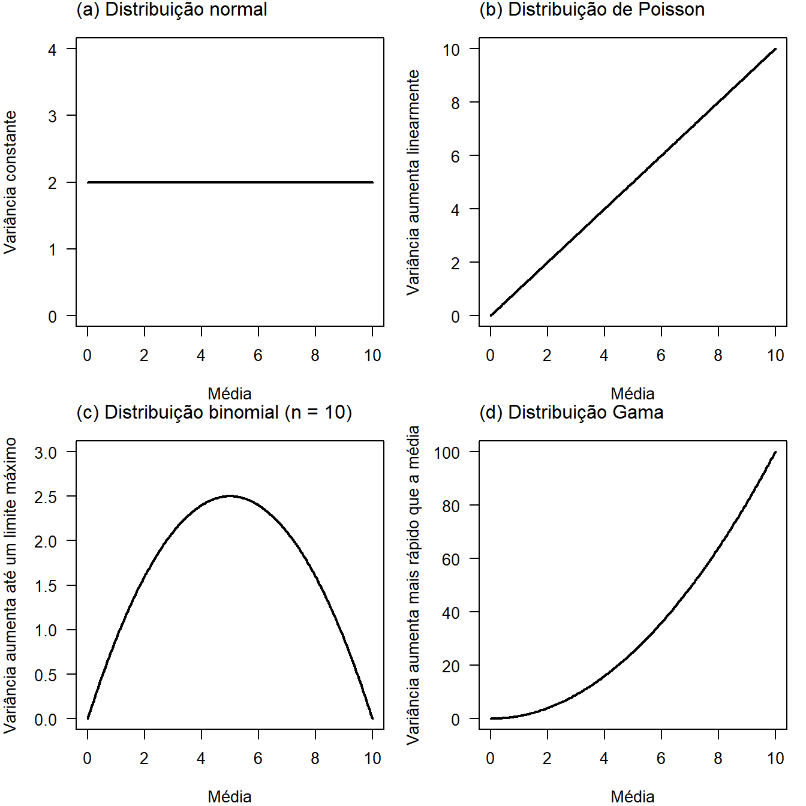
Figura 15.1: Observe que a reta ajustada produz previsões negativas para riachos muito estreitos, algo biologicamente impossível
Da mesma forma, probabilidades e proporções estão naturalmente limitadas ao intervalo entre 0 e 1, mas uma regressão linear pode gerar valores menores que 0 ou maiores que 1.
Essas limitações motivaram o desenvolvimento dos Modelos Lineares Generalizados (GLMs), que mantêm a estrutura dos modelos lineares tradicionais, mas permitem utilizar diferentes distribuições de probabilidade e diferentes funções de ligação (link functions) de acordo com a natureza da variável resposta.
Assim, enquanto a regressão linear utiliza exclusivamente a distribuição Normal, os GLMs possibilitam modelar variáveis de contagem, proporções, probabilidades e outras distribuições frequentemente encontradas em estudos ecológicos.
15.0.2 Tipos de distribuição em GLM’s
A principal suposição que fizemos até aqui para os modelo lineares (função lm()), é que a variância é constante (Figura 15.2, (a)). Nesse caso, a escolha da distribuição depende da natureza da variável resposta. Variáveis contínuas aproximadamente simétricas costumam ser modeladas por uma distribuição Normal, enquanto contagens, proporções e variáveis contínuas positivas requerem outras distribuições.
Em dados de contagem, nos quais a variável resposta assume valores inteiros e frequentemente há muitos zeros no conjunto de dados, a variância pode aumentar linearmente com a média (Figura 15.2, (b)). Em dados de proporção, nos quais se registra tanto o número de sucessos quanto o número de fracassos de um evento, a variância apresenta uma relação em forma de U invertido com a média (Figura 15.2, (c)). Quando a variável resposta segue uma distribuição gama (como em dados de tempo até a morte ou tempo até a ocorrência de um evento), a variância aumenta mais rapidamente do que de forma linear em relação à média (Figura 15.2, (d)).
![Relação entre a média e a variância para diferentes distribuições de probabilidade utilizadas em Modelos Lineares Generalizados (GLMs). (a) Distribuição normal, com variância constante; (b) distribuição de Poisson, em que a variância é igual à média; (c) distribuição binomial, cuja variância apresenta uma relação em forma de U invertido com a média; e (d) distribuição gama, em que a variância aumenta proporcionalmente ao quadrado da média. Essas diferentes relações entre média e variância justificam o uso de famílias de distribuições específicas em GLMs, em substituição aos modelos lineares clássicos que assumem homocedasticidade.](fundamentos_de_ecologia_numerica_files/figure-html/4043glm2-1.png)
Figura 15.2: Relação entre a média e a variância para diferentes distribuições de probabilidade utilizadas em Modelos Lineares Generalizados (GLMs). (a) Distribuição normal, com variância constante; (b) distribuição de Poisson, em que a variância é igual à média; (c) distribuição binomial, cuja variância apresenta uma relação em forma de U invertido com a média; e (d) distribuição gama, em que a variância aumenta proporcionalmente ao quadrado da média. Essas diferentes relações entre média e variância justificam o uso de famílias de distribuições específicas em GLMs, em substituição aos modelos lineares clássicos que assumem homocedasticidade.
Aqui vemos a dispersão da variância em resposta a média para as famílias de distribuições mais comuns em GLM (Figura 15.3).
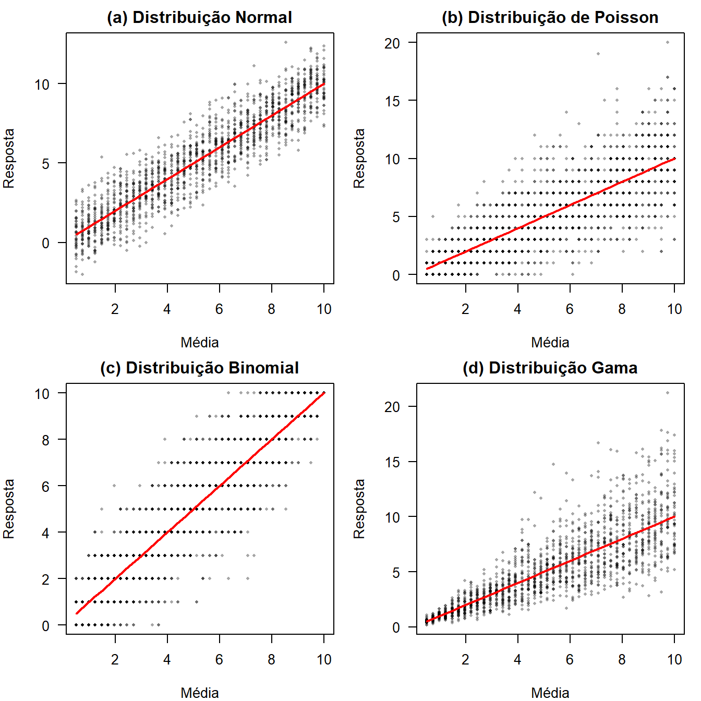
Figura 15.3: Relação da dispersão da variância em resposta a média para as famílias de distribuição mais comuns em GLM. Essas diferentes relações entre média e variância justificam o uso de famílias de distribuições específicas em GLMs, em substituição aos modelos lineares clássicos que assumem homocedasticidade.
Essas quatro relações fundamentam a escolha da família de distribuição em Modelos Lineares Generalizados (GLMs), pois cada tipo de variável resposta apresenta um padrão característico de relação entre a média e a variância.
As principais distribuições utilizadas em Modelos Lineares Generalizados são mostradas abaixo (Figura 15.4). As distribuições Normal, Gamma e Beta são contínuas, portanto possuem uma função densidade (\(f(x)\)). Já as distribuições Poisson e Binomial são discretas. Elas possuem uma função de massa de probabilidade (\(P(X=x)\)), definida apenas para valores inteiros. Além da forma da distribuição, cada família possui uma relação característica entre a média e a variância. Nos modelos lineares clássicos assume-se variância constante. Nos GLMs, entretanto, a variância pode aumentar linearmente com a média (Poisson), atingir um máximo (Binomial) ou crescer aproximadamente com o quadrado da média (Gamma) (Figura 15.1). Essa flexibilidade permite modelar adequadamente diferentes tipos de dados biológicos.
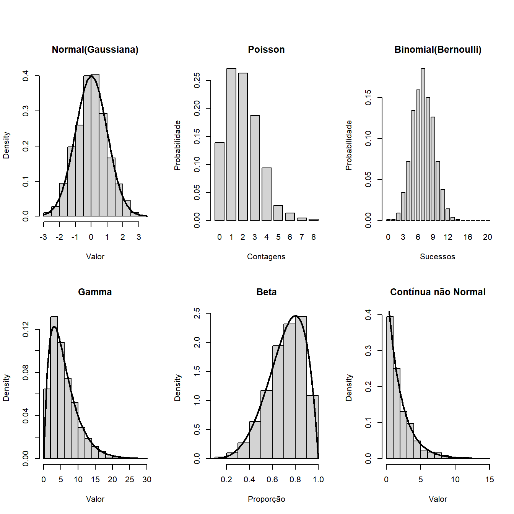
Figura 15.4: Principais distribuições utilizadas em Modelos Lineares Generalizados.
Muitos dos métodos estatísticos clássicos, como a regressão linear e o teste t de Student, assumem que a variância é constante (homocedasticidade). No entanto, em diversas aplicações essa suposição não é válida. É justamente por isso que os GLMs são tão úteis, pois permitem modelar adequadamente situações em que a variância depende da média da variável resposta (CRAWLEY, 2005, 2015; DUNN; SMYTH, 2018; MCCULLAGH; NELDER, 1989; NELDER; WEDDERBURN, 1972; ZUUR et al., 2009).
Mas qual distribuição escolher? Abaixo segue um esquema ((Figura 15.5) adaptado de Davies (DAVIES et al., 2021, 2022).
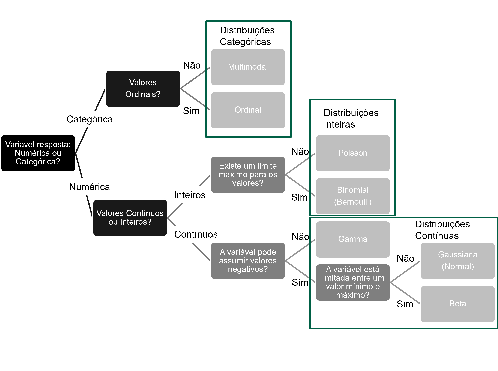
Figura 15.5: Tipos de distribuição em relação a variável resposta em GLM’s (Adaptado de Davies, B.F.R. em 2026. Fonte: https://bedeffinianrowedavies.com/).
15.0.2.1 Pressupostos
Um Modelo Linear Generalizado possui três componentes fundamentais: a estrutura de erros, o preditor linear e a função de ligação (link function) (CRAWLEY, 2015):
15.0.2.2 Estrutura de erros:
Até este ponto, trabalhamos com análises estatísticas que assumem erros normalmente distribuídos. Na prática, entretanto, muitos tipos de dados apresentam distribuições de erro que não seguem a distribuição normal (CRAWLEY, 2005, 2015). Alguns exemplos incluem:
- erros com forte assimetria;
- erros com excesso ou deficiência de curtose;
- erros limitados a um intervalo específico, como ocorre com dados de proporções;
- erros que não podem produzir valores ajustados negativos, como em dados de contagem.
As principais alternativas para lidar com essas situações consistem em transformar a variável resposta ou utilizar métodos não-paramétricos (SOKAL; ROHLF, 1995). Os Modelos Lineares Generalizados representam uma abordagem mais flexível, pois permitem especificar diferentes distribuições de probabilidade para os erros, de acordo com a natureza da variável resposta.
Entre as distribuições de erro mais utilizadas em GLMs destacam-se (FARAWAY, 2016):
- Distribuição de Poisson, apropriada para dados de contagem;
- Distribuição Binomial, indicada para dados de proporções ou sucessos e fracassos;
- Distribuição Gama, adequada para variáveis contínuas, positivas, cuja variabilidade tende a aumentar proporcionalmente ao quadrado da média (ou que apresentam coeficiente de variação aproximadamente constante);
- Distribuição Exponencial, empregada em dados de tempo até a ocorrência de um evento, como em análises de sobrevivência.
| Tipo de variável resposta | Distribuição recomendada |
|---|---|
| Contínua | Normal (Gaussiana) |
| Contagem | Poisson |
| Presença/Ausência | Binomial |
| Proporção | Binomial ou Beta* |
| Tempo ou valores positivos | Gamma |
* A distribuição Binomial é utilizada quando a proporção é obtida a partir de um número conhecido de ensaios (por exemplo, número de sementes germinadas em 100 sementes). A distribuição Beta é indicada para proporções contínuas restritas ao intervalo (0,1), como a fração de cobertura vegetal ou a proporção de área ocupada por uma espécie.
15.0.2.3 Estrutura do modelo:
A estrutura de um modelo relaciona cada valor observado da variável resposta (y) a um valor previsto (ŷ). Esse valor previsto é obtido por meio de uma transformação aplicada ao resultado do preditor linear.
O preditor linear, geralmente representado pela letra grega (\(\eta\)) (eta), consiste em uma combinação linear dos efeitos de uma ou mais variáveis explicativas (\(x_j\)):
\[\eta_i = \beta_0 + \sum_{j=1}^{p} x_{ij}\beta_j,\]
em que:
- \(x_{ij}\) representa o valor da j-ésima variável explicativa para a i-ésima observação;
- \(\beta_j\) são os parâmetros do modelo, normalmente desconhecidos e estimados a partir dos dados;
- \(p\) é o número de variáveis explicativas incluídas no modelo.
O lado direito da equação é denominado estrutura linear. O número de termos do preditor linear depende da quantidade de parâmetros que precisam ser estimados.
Por exemplo:
Em uma regressão linear simples, o preditor linear possui dois parâmetros: o intercepto (\(\beta_0\)) e o coeficiente angular (\(\beta_1\)). Em uma ANOVA de um fator com quatro tratamentos, o preditor linear contém quatro termos, correspondentes às médias estimadas para cada nível do fator. Quando o modelo inclui covariáveis, cada uma delas acrescenta um novo termo ao preditor linear, representando sua inclinação (coeficiente de regressão). Em uma ANOVA fatorial, os termos de interação também adicionam parâmetros ao modelo. O número de parâmetros depende dos graus de liberdade envolvidos. Por exemplo, a interação entre um fator com dois níveis e outro com quatro níveis acrescenta três parâmetros, pois \(((2-1)(4-1)=3)\).
No caso dos GLMs, para avaliar o ajuste de um modelo, calcula-se inicialmente o valor do preditor linear (\(\eta\)) para cada observação da variável resposta. Em seguida, esse valor é relacionado à variável resposta por meio da função de ligação (link function). A função de ligação transforma a média da variável resposta para uma escala em que a relação com os preditores seja linear. Após estimar o preditor linear, o modelo aplica a função inversa da ligação para retornar os valores previstos à escala original da variável resposta. Esses valores são conhecidos como valores ajustados (fitted values).
Por exemplo, quando a função de ligação é o logaritmo (log link), o valor ajustado é obtido aplicando a função exponencial ao preditor linear:
\[\hat{\mu}=e^{\eta}\] e quando a função de ligação é o recíproco (reciprocal link), o valor ajustado corresponde ao inverso do preditor linear:
\[\hat{\mu}=\frac{1}{\eta}\]
Assim, embora o ajuste do modelo seja realizado na escala do preditor linear, os resultados finais são expressos na escala original da variável resposta, facilitando sua interpretação.
15.0.2.4 Função de ligação:
Segundo CRAWLEY (2015), um dos conceitos mais desafiadores dos GLMs é a compreensão da relação entre os valores da variável resposta, observados nos dados e previstos pelo modelo, e o preditor linear. A ideia fundamental é que a função de ligação (link function) estabelece a relação entre a média da variável resposta e o preditor linear.
CRAWLEY (2015) expressa essa relação em termos matemáticos como:
\[\eta = g(\mu),\] onde,
- \(\eta\) é o preditor linear;
- \(\mu = E(y)\) é a média esperada da variável resposta;
- \(g(\cdot)\) é a função de ligação.
Embora a expressão seja simples, seu significado merece atenção. O preditor linear (\(\eta\)) é obtido a partir da combinação linear das variáveis explicativas e de seus respectivos coeficientes. Portanto, ele não corresponde diretamente a um valor da variável resposta, exceto no caso particular da função de ligação identidade, utilizada implicitamente na regressão linear tradicional.
Em um GLM, a média da variável resposta é inicialmente transformada pela função de ligação, produzindo o preditor linear. Após o ajuste do modelo, a função inversa da ligação é aplicada ao preditor linear para obter os valores ajustados na escala original da variável resposta (FARAWAY, 2016):
\[\mu = g^{-1}(\eta)\]
Assim, o modelo é ajustado em uma escala linear, mas as previsões são apresentadas na escala original dos dados, o que facilita sua interpretação.
15.0.3 Escolha da função de ligação
Uma das principais razões para utilizar diferentes funções de ligação é garantir que os valores ajustados permaneçam dentro de limites compatíveis com a natureza da variável resposta (FARAWAY, 2016).
Por exemplo:
Em dados de contagem, os valores previstos devem ser sempre maiores ou iguais a zero, pois contagens negativas não fazem sentido. Nesse caso, a função de ligação logarítmica (log link) é uma escolha apropriada, pois sua função inversa é a exponencial:
\[\mu = e^{\eta}\]
que produz apenas valores positivos.
Da mesma forma, quando a variável resposta representa uma proporção ou uma probabilidade, os valores ajustados devem estar obrigatoriamente entre 0 e 1. Para esses casos, utiliza-se geralmente a função de ligação logito (logit link), definida como:
\[\eta = \log\left(\frac{p}{1-p}\right)\]
em que \(p\) representa a probabilidade de ocorrência do evento de interesse. A função inversa do logito garante que todas as probabilidades estimadas permaneçam no intervalo entre 0 e 1.
15.0.3.1 Comparação entre funções de ligação
Uma das vantagens dos GLMs é que diferentes funções de ligação podem ser utilizadas para um mesmo conjunto de dados, permitindo comparar modelos que descrevem diferentes formas de relação entre o preditor linear e a variável resposta.
— M.J. Crawley em (CRAWLEY, 2015).
Como todos esses modelos são ajustados utilizando a mesma estrutura de dados, é possível comparar seus desempenhos por meio da deviância residual (residual deviance). Em geral, a função de ligação mais adequada é aquela que produz a menor deviância residual, indicando que o modelo descreve os dados de forma mais eficiente.
Dessa forma, a escolha da função de ligação não altera apenas a forma matemática do modelo, mas também influencia diretamente a qualidade do ajuste e a interpretação dos efeitos das variáveis explicativas sobre a variável resposta.
15.0.3.2 Funções canônicas de ligação
As funções de ligação canônicas (canonical link functions) são as funções de ligação utilizadas no R por padrão quando uma determinada distribuição de erros é especificada no argumento family de um GLM. Em outras palavras, quando nenhuma função de ligação é explicitamente informada, o software adota automaticamente a função de ligação canônica associada à distribuição escolhida.
As principais combinações entre distribuições de erro e suas respectivas funções de ligação canônicas são apresentadas na Tabela abaixo (FARAWAY, 2016).
Distribuição de erros (family) |
Função de ligação canônica (link) |
Função inversa |
|---|---|---|
| Normal | Identidade (identity) | \(\mu = \eta\) |
| Poisson | Logaritmo (log) | \(\mu = e^{\eta}\) |
| Binomial | Logito (logit) | \(\mu = \dfrac{e^{\eta}}{1+e^{\eta}}\) |
| Gama | Recíproca (reciprocal) | \(\mu = \dfrac{1}{\eta}\) |
Cada uma dessas funções foi desenvolvida para estabelecer uma relação adequada entre o preditor linear (\(\eta\)) e a média da variável resposta (\(\mu\))), respeitando as características da distribuição dos dados. A escolha da função de ligação garante que os valores ajustados permaneçam dentro de limites plausíveis. Por exemplo, a função log assegura que as estimativas para dados de contagem sejam sempre positivas, enquanto a função logito produz probabilidades compreendidas entre 0 e 1.
Embora essas sejam as funções de ligação canônicas, elas não são as únicas opções disponíveis. Em muitos casos, é possível utilizar outras funções de ligação para uma mesma distribuição. Por exemplo, para a distribuição binomial também podem ser empregadas as funções probit e complementary log-log (cloglog), e para a distribuição gama podem ser utilizadas as funções log e identidade. A função canônica, entretanto, costuma ser a escolha inicial por apresentar propriedades matemáticas convenientes e, frequentemente, proporcionar estimativas mais eficientes (MCCULLAGH; NELDER, 1989; ZUUR et al., 2009).
No R, basta especificar a família da distribuição para que a função de ligação canônica seja utilizada automaticamente. Para uma regressão linear (distribuição normal e função identidade)(equivalente a lm():
glm(y ~ x, family = gaussian(link = "identity"))Caso seja desejada outra função de ligação, ela pode ser especificada por meio do argumento link. Para a distribuição Gama com ligação log:
glm(y ~ x, family = Gamma(link = "log"))As quatro combinações canônicas apresentadas na tabela correspondem aos modelos mais utilizados na prática e constituem o ponto de partida para a maioria das análises.
15.0.3.3 Exemplo 1: Distribuição Gaussiana
Vejamos um fluxo de trabalho prático:
Formular a pergunta científica e traduzi-la em um modelo estatístico.
Escolher a distribuição da variável resposta.
Ajustar o modelo .
Verificar os diagnósticos do modelo: Gráfico de resíduos versus valores ajustados (Residuals vs. Fitted) e no gráfico Q-Q (Normal Q-Q) antes de interpretar os resultados.
Interpretar o modelo por meio da visualização das predições: Gerar valores preditos, intervalos de confiança e os sobrepor aos dados observados, facilitando a interpretação dos resultados.
Nesse primeiro exemplo, vamos usar a distribuição Gaussiana (apropriada para dados contínuos), utilizando lm() e glm(..., family = gaussian), uma vez que lm() é, essencialmente, um GLM Gaussiano, e é equivalente a glm(..., family = gaussian).
15.1 Organização básica
15.1.1 Pacotes do módulo
Instalando os pacotes necessários para esse módulo.
install.packages("openxlsx")
packageVersion("rlang")
remove.packages("rlang")
install.packages("rlang")
packageVersion("rlang")
install.packages("devtools")
devtools::install_github("dustinfife/flexplot")Limpando a memória
dev.off() #apaga os graficos, se houver algum
rm(list=ls(all=TRUE)) #limpa a memória
cat("\014") #limpa o console
#options(scipen = 999) #sem notação científica
library(openxlsx)
univ <- read.xlsx("D:/Elvio/OneDrive/Disciplinas/_EcoNumerica/5.Matrizes/tucuna.xlsx",
rowNames = T, colNames = T,
sheet = "tucuna")
library(tidyverse)
lm1 <- lm(CP_cm~sexo*periodo, data = univ)
par(mfrow = c(2,2))
plot(lm1)
par(mfrow = c(1,1))
library(patchwork)
ModelOutputs <- data.frame(Fitted=fitted(lm1),
Residuals=resid(lm1))
p1<-ggplot(ModelOutputs)+
geom_point(aes(x = Fitted, y = Residuals)) +
theme_classic() +
labs(y = "Resíduos", x = "Valores ajustados")
p2<-ggplot(ModelOutputs) +
stat_qq(aes(sample = Residuals)) +
stat_qq_line(aes(sample = Residuals)) +
theme_classic() +
labs(y = "Quantis dos dados",x = "Quantis teóricos")
p1+p2
summary(lm1)##
## Call:
## lm(formula = CP_cm ~ sexo * periodo, data = univ)
##
## Residuals:
## Min 1Q Median 3Q Max
## -11.904 -3.421 -1.600 2.929 27.720
##
## Coefficients:
## Estimate Std. Error t value Pr(>|t|)
## (Intercept) 14.9026 0.9833 15.156 < 2e-16 ***
## sexoimaturo -7.7226 1.2566 -6.145 1.83e-09 ***
## sexoMACHO 2.7650 1.2277 2.252 0.0248 *
## periodoseco 0.6427 1.2884 0.499 0.6182
## sexoimaturo:periodoseco -0.1022 1.5813 -0.065 0.9485
## sexoMACHO:periodoseco 1.6934 1.6973 0.998 0.3190
## ---
## Signif. codes: 0 '***' 0.001 '**' 0.01 '*' 0.05 '.' 0.1 ' ' 1
##
## Residual standard error: 6.061 on 428 degrees of freedom
## Multiple R-squared: 0.41, Adjusted R-squared: 0.4031
## F-statistic: 59.49 on 5 and 428 DF, p-value: < 2.2e-16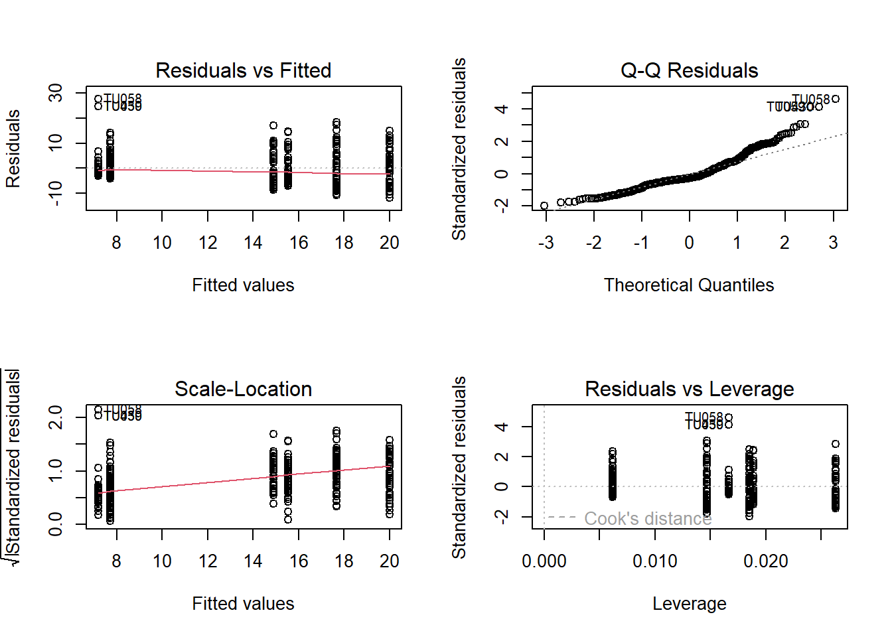
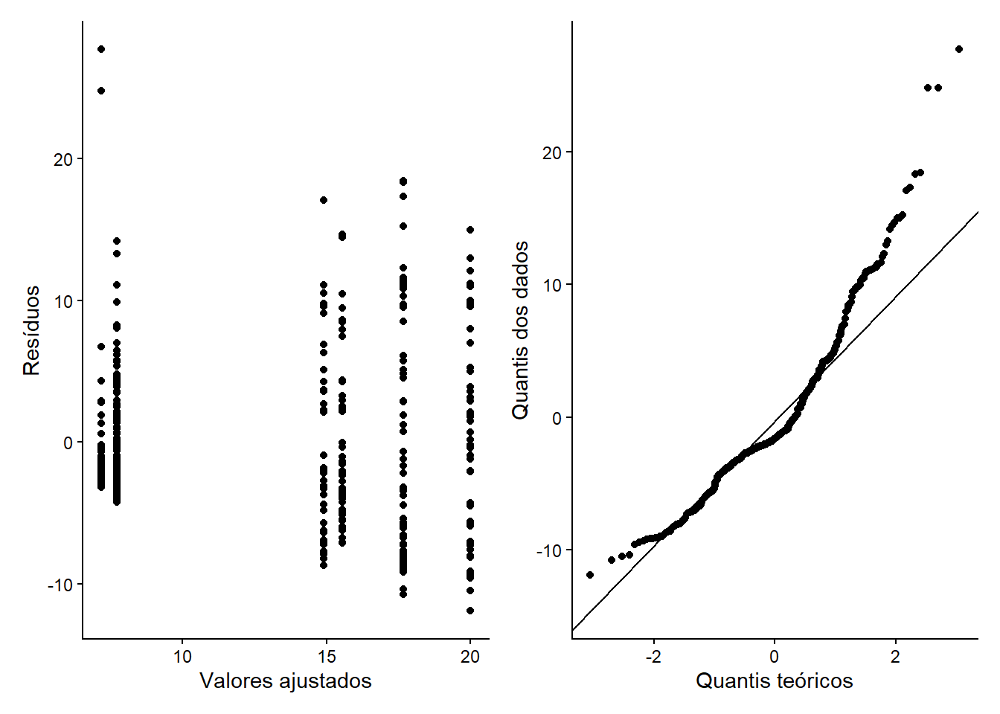
O modelo está usando os três sexos, mas nesse caso o R utiliza codificação por tratamento (treatment contrasts): um dos níveis é escolhido como categoria de referência, e apenas os demais aparecem como coeficientes.
No seu modelo apresentado, o nível FÊMEA foi escolhido como referência. Assim, no modelo, FÊMEA (referência) equivale ao intercepto. Temos 3 níveis, mas apenas 2 coeficientes, porque o terceiro está embutido no intercepto.
Nesse caso, o intercepto vale 14.90. Esse é o comprimento médio (CP_cm) das fêmeas, no período chuvoso (também referência, note que que ele não aparece no modelo). O coeficiente sexoMACHO (Estimate = 2.765 e p = 0.0248), significa que, no período chuvoso, machos possuem, em média, 14.90 + 2.77 = 17.67 cm. Enquanto fêmeas possuem 14.90 cm. Já o coeficiente sexoimaturo (Estimate = -7.723), significa que os imaturos são, em média, 14.90 - 7.72 = 7.18 cm menores que as fêmeas no período chuvoso.
Para mudar para que MACHO seja a referência, pode-se redefinir o fator univ$sexo <- relevel(univ$sexo, ref = "MACHO").
library(ggdist)
p_box <- ggplot(univ)+
geom_boxplot(aes(x = sexo,
y = CP_cm,
fill = periodo)) +
scale_fill_manual(values = c("darkcyan","darkorange")) +
labs(x = "Sexo", y = "Variável resposta (CP(cm))") +
theme_classic()
p_cloud <- ggplot(univ,
aes(x = sexo,
y = CP_cm,
fill = periodo, colour = periodo))+
stat_halfeye(adjust = .5,
width = .6,
.width = c(.5, .95),
alpha=0.7,
position = position_dodge()) +
scale_fill_manual(values = c("darkcyan","darkorange"))+
scale_colour_manual(values =c ("darkcyan","darkorange"))+
labs(x = "Sexo",y="Variável resposta (CP(cm))") +
theme_classic()
p_box+p_cloud
NewData_1 <- expand.grid(periodo = c("chuvoso","seco"),
sexo = c("FEMEA","imaturo","MACHO"))
Pred<-predict(lm1,NewData_1,se.fit=TRUE)
NewData <- NewData_1 %>%
mutate(response=Pred$fit,
se.fit=Pred$se.fit,
Upr=response+(se.fit*1.96),
Lwr=response-(se.fit*1.96))
ggplot(NewData) +
geom_point(aes(x = sexo,
y = response,
colour = periodo),
position = position_dodge(0.8)) +
geom_errorbar(aes(x = sexo,
ymax = Upr,
ymin = Lwr,
colour = periodo),
width = 0.1,
position=position_dodge(0.8)) +
scale_colour_manual(values=c("darkcyan","darkorange")) +
labs(x="Sexo",y="Variável resposta (CP(cm))") +
theme_classic()
Plot1 <- ggplot(univ,
aes(x = sexo,
y = CP_cm,
fill = periodo,
colour = periodo)) +
ggdist::stat_halfeye(adjust = .5,
width = .6,
.width = c(.5, .95),
alpha = 0.7,
position = position_dodge()) +
scale_fill_manual(values = c("darkcyan", "darkorange")) +
scale_colour_manual(values = c("darkcyan", "darkorange")) +
labs(x = "Sexo",y = "Variável resposta (CP(cm))") +
theme_classic() +
theme(legend.position = "none")
Plot2 <- ggplot(NewData) +
geom_point(aes(x = sexo, y = response, colour = periodo),
position = position_dodge(0.8)) +
geom_errorbar(aes(x = sexo, ymax = Upr,
ymin = Lwr, colour = periodo),
width = 0.1,
position = position_dodge(0.8)) +
scale_colour_manual(values = c("darkcyan","darkorange")) +
labs(x="Sexo",y="Variável resposta modelada(CP(cm))") +
theme_classic()
Plot1+Plot2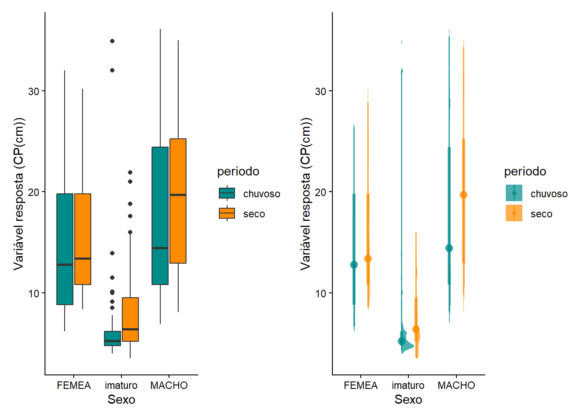
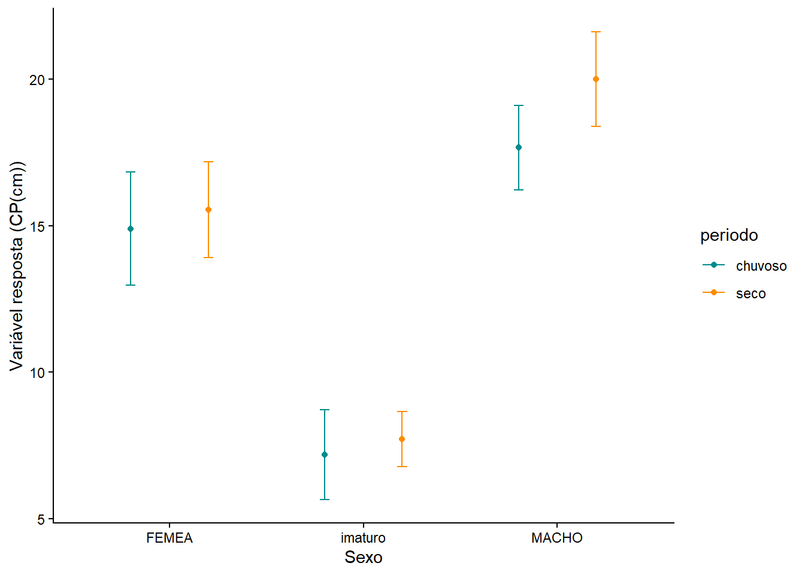
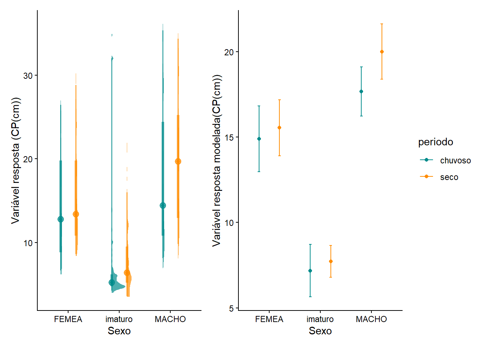
Plot1 <- ggplot(univ,
aes(x = sexo,
y = CP_cm,
fill = periodo, colour = periodo)) +
ggdist::stat_halfeye(adjust = .5,
width = .6,
.width = c(.5, .95),
alpha = 0.7,
position = position_dodge()) +
scale_fill_manual(values = c("darkcyan", "darkorange")) +
scale_colour_manual(values = c("darkcyan", "darkorange"))+
labs(x = "sexo",y = "Variável resposta (CP(cm))") +
theme_classic() +
scale_y_continuous(limits = c(0, max(univ$CP_cm))) +
theme(legend.position = "none")
Plot2 <- ggplot(NewData) +
geom_point(aes(x = sexo, y = response, colour = periodo),
position = position_dodge(0.8)) +
geom_errorbar(aes(x = sexo, ymax = Upr,
ymin = Lwr, colour = periodo),
width = 0.1,
position = position_dodge(0.8)) +
scale_colour_manual(values = c("darkcyan", "darkorange")) +
labs(x = "Sexo",y = "Modelo da variável resposta (CT(cm))") +
scale_y_continuous(limits = c(0, max(univ$CP_cm))) +
theme_classic()
Plot1+Plot2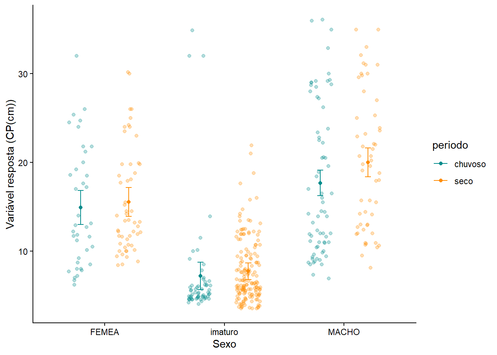
ggplot(NewData) +
geom_point(aes(x = sexo, y = response, colour = periodo),
position = position_dodge(0.8)) +
geom_errorbar(aes(x = sexo, ymax = Upr,
ymin = Lwr, colour = periodo),
width = 0.1,
position = position_dodge(0.8)) +
geom_point(data = univ, aes(x = sexo,
y = CP_cm,
colour = periodo),
position = position_jitterdodge(jitter.width = 0.4,
dodge.width = 0.8),
alpha = 0.3,
size = 1.5) +
scale_colour_manual(values = c("darkcyan", "darkorange")) +
labs(x = "Sexo", y = "Variável resposta (CP(cm))") +
theme_classic()
library(ggplot2)
library(dplyr)
colnames(univ)
dados <- subset(univ,
sexo != "imaturo" & Pgon_g>0.2 & Pgon_g<10) #ou `filter` do dplyr
table(dados$sexo)
unique(dados$sexo)
ggplot(dados, aes(x = CP_cm,
y = Pgon_g,
color = sexo)) +
geom_point() +
geom_smooth(method = "lm",
se = FALSE)
# Dados observados
ggplot(dados) +
geom_point(aes(x = CP_cm,
y = Pgon_g,
colour = sexo),
alpha = 0.6,
size = 2) +
scale_colour_manual(values = c("darkcyan","darkorange")) +
labs(x = "Comprimento padrão (cm)",
y = "Peso da gônada (g)") +
theme_classic()
# Ajuste do modelo
lm2 <- lm(Pgon_g ~ sexo * CP_cm, data = dados)
# Diagnóstico do modelo
ModelOutputs <- data.frame(
Fitted = fitted(lm2),
Residuals = resid(lm2)
)
p3 <- ggplot(ModelOutputs) +
geom_point(aes(x = Fitted,
y = Residuals)) +
geom_hline(yintercept = 0,
linetype = 2,
colour = "red") +
labs(x = "Valores ajustados",
y = "Resíduos") +
theme_classic()
p4 <- ggplot(ModelOutputs) +
stat_qq(aes(sample = Residuals)) +
stat_qq_line(aes(sample = Residuals)) +
labs(x = "Quartis teóricos",
y = "Quartis amostrais") +
theme_classic()
p3 + p4
summary(lm2)
# Conjunto de dados para predição
NewData_ <- expand.grid(
CP_cm = seq(from = min(dados$CP_cm),
to = max(dados$CP_cm),
length.out = 1000),
sexo = c("FEMEA","MACHO")
)
# Limites observados para cada sexo
# (evita extrapolar além dos dados)
FEMEA_var <- dados %>%
filter(sexo == "FEMEA") %>%
summarise(min = min(CP_cm),
max = max(CP_cm))
MACHO_var <- dados %>%
filter(sexo == "MACHO") %>%
summarise(min = min(CP_cm),
max = max(CP_cm))
NewData_3 <- NewData_ %>%
dplyr::mutate(
Range = dplyr::case_when(
sexo == "FEMEA" &
CP_cm >= FEMEA_var$min &
CP_cm <= FEMEA_var$max ~ "Good",
sexo == "MACHO" &
CP_cm >= MACHO_var$min &
CP_cm <= MACHO_var$max ~ "Good"
)
) %>%
dplyr::filter(!is.na(Range)) %>%
dplyr::select(-Range)
# Predições do modelo
Pred_2 <- predict(lm2, NewData_3, se.fit = TRUE)
NewData_2 <- NewData_3 %>%
mutate(response = Pred_2$fit,
se.fit = Pred_2$se.fit,
Upr = response + 1.96 * se.fit,
Lwr = response - 1.96 * se.fit)
# Apenas as curvas ajustadas
ggplot() +
geom_ribbon(data = NewData_2,
aes(x = CP_cm,
ymin = Lwr,
ymax = Upr,
fill = sexo),
alpha = 0.30) +
geom_line(data = NewData_2,
aes(x = CP_cm,
y = response,
colour = sexo),
linewidth = 1.2) +
scale_colour_manual(values = c("darkcyan","darkorange")) +
scale_fill_manual(values = c("darkcyan","darkorange")) +
labs(x = "Comprimento padrão (cm)",
y = "Peso da gônada previsto (g)") +
theme_classic()
# Dados observados e modelo ajustado
ggplot() +
geom_point(data = dados,
aes(x = CP_cm,
y = Pgon_g,
colour = sexo),
alpha = 0.5,
size = 2) +
geom_ribbon(data = NewData_2,
aes(x = CP_cm,
ymin = Lwr,
ymax = Upr,
fill = sexo),
alpha = 0.25) +
geom_line(data = NewData_2,
aes(x = CP_cm,
y = response,
colour = sexo),
linewidth = 1.2) +
scale_colour_manual(values = c("darkcyan","darkorange")) +
scale_fill_manual(values = c("darkcyan","darkorange")) +
labs(x = "Comprimento padrão (cm)",
y = "Peso da gônada (g)") +
theme_classic()## [1] "CT_cm" "PT_g" "CP_cm" "Ctubo_cm" "PC_g" "p_PT"
## [7] "Pest_g" "Cest_cm" "gr_est" "ir_est" "Pint_g" "Cint_cm"
## [13] "gr_int" "ir_int" "Pgon_g" "Cgon_cm" "emg" "ig"
## [19] "mes" "periodo" "estação" "sexo" "sexo2"
##
## FEMEA MACHO
## 21 39
## [1] "MACHO" "FEMEA"
##
## Call:
## lm(formula = Pgon_g ~ sexo * CP_cm, data = dados)
##
## Residuals:
## Min 1Q Median 3Q Max
## -2.7401 -0.3473 -0.2079 0.3214 5.6282
##
## Coefficients:
## Estimate Std. Error t value Pr(>|t|)
## (Intercept) -6.73940 1.69138 -3.985 0.000197 ***
## sexoMACHO 6.18466 2.24380 2.756 0.007875 **
## CP_cm 0.41581 0.06933 5.998 1.53e-07 ***
## sexoMACHO:CP_cm -0.36462 0.08640 -4.220 9.03e-05 ***
## ---
## Signif. codes: 0 '***' 0.001 '**' 0.01 '*' 0.05 '.' 0.1 ' ' 1
##
## Residual standard error: 1.296 on 56 degrees of freedom
## Multiple R-squared: 0.5956, Adjusted R-squared: 0.5739
## F-statistic: 27.49 on 3 and 56 DF, p-value: 4.621e-11

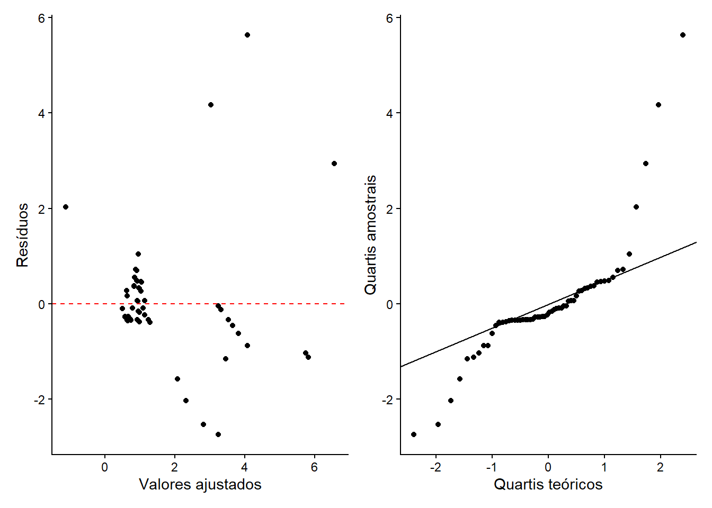
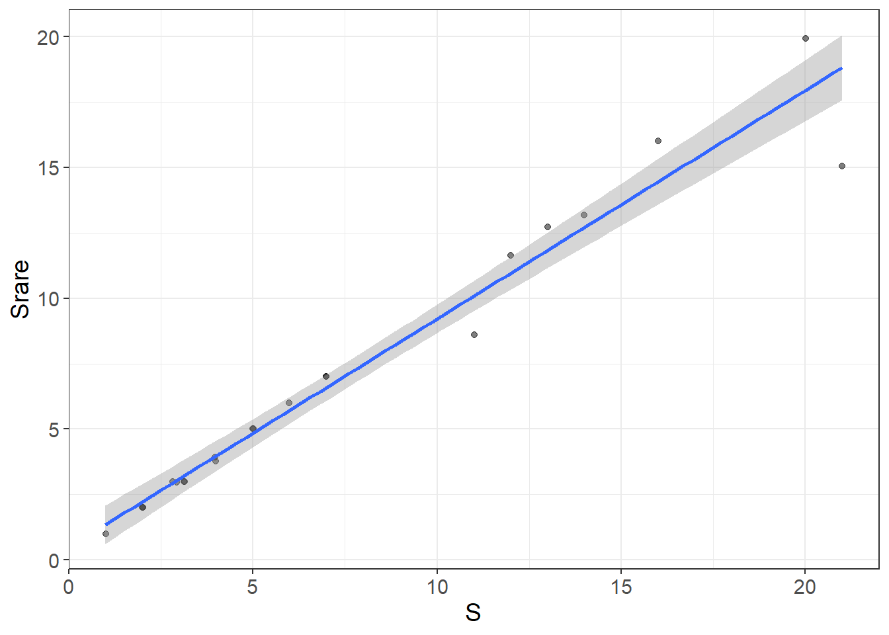
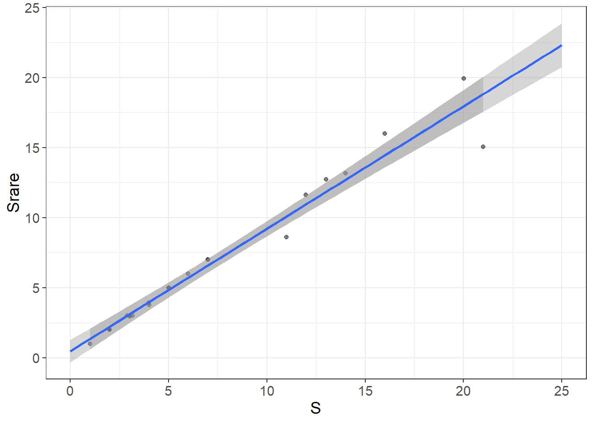
Como há uma interação significativa (sexo × CP_cm, p < 0,001), esse gráfico é especialmente interessante porque mostra que as inclinações das retas são diferentes entre machos e fêmeas, e isso é justamente o que o termo de interação está testando. Em vez de interpretar apenas a tabela de coeficientes, o gráfico permite visualizar como a relação entre comprimento e peso da gônada muda entre os sexos. Isso segue exatamente a abordagem adotada no tutorial que você está utilizando.
Hoje é mais comum usar o pacote emmeans para interpretar modelos com interações. Além de summary(lm2), podemos fazer:
## $emmeans
## sexo emmean SE df lower.CL upper.CL
## FEMEA 4.414 0.342 56 3.729 5.10
## MACHO 0.818 0.221 56 0.375 1.26
##
## Confidence level used: 0.95
##
## $contrasts
## contrast estimate SE df t.ratio p.value
## FEMEA - MACHO 3.6 0.407 56 8.828 <0.0001
##
##
## $emtrends
## sexo CP_cm.trend SE df lower.CL upper.CL
## FEMEA 0.4158 0.0693 56 0.2769 0.555
## MACHO 0.0512 0.0516 56 -0.0521 0.154
##
## Confidence level used: 0.95
##
## $contrasts
## contrast estimate SE df t.ratio p.value
## FEMEA - MACHO 0.365 0.0864 56 4.220 <0.0001O primeiro compara as médias ajustadas entre os sexos (quando apropriado) e o segundo testa formalmente se as inclinações das retas diferem entre machos e fêmeas, que é exatamente a hipótese representada pelo termo de interação sexo:CP_cm. Isso complementa a interpretação gráfica apresentada.
plot(univ$CP_cm,
univ$CT_cm,
pch = 16,
xlab = "Comprimento padrão (cm)",
ylab = "Comprimento total (cm)")
modelo <- glm(CT_cm ~ CP_cm,
family = gaussian,
data = univ)
summary(modelo)
modelo <- lm(CT_cm ~ CP_cm,
data = univ)
novo <- data.frame(
CP_cm = seq(min(univ$CP_cm),
max(univ$CP_cm),
length.out = 200)
)
pred <- predict(modelo,
newdata = novo,
se.fit = TRUE)
novo$fit <- pred$fit
novo$lwr <- pred$fit - 1.96 * pred$se.fit
novo$upr <- pred$fit + 1.96 * pred$se.fit
plot(univ$CP_cm,
univ$CT_cm,
pch = 16,
xlab = "Comprimento padrão (cm)",
ylab = "Comprimento total (cm)")
polygon(c(novo$CP_cm,
rev(novo$CP_cm)),
c(novo$lwr,
rev(novo$upr)),
col = "grey85",
border = NA)
lines(novo$CP_cm,
novo$fit,
lwd = 2)
par(mfrow = c(2,2))
plot(modelo)
par(mfrow = c(1,1))
summary(modelo)
coef(glm(CT_cm ~ CP_cm,
family = gaussian,
data = univ))
coef(lm(CT_cm ~ CP_cm,
data = univ))
##############
t.test(CP_cm ~ periodo,
data = univ)
modelo <- glm(CP_cm ~ periodo,
family = gaussian,
data = univ)
summary(modelo)
modelo <- lm(CP_cm ~ periodo,
data = univ)
summary(modelo)
boxplot(CP_cm ~ periodo,
data = univ,
col = "lightgray",
xlab = "Sex",
ylab = "Standard length (cm)")
stripchart(CP_cm ~ periodo,
data = univ,
vertical = TRUE,
method = "jitter",
pch = 16,
xlab = "Sex",
ylab = "Standard length (cm)")
aggregate(CP_cm ~ periodo,
data = univ,
mean)
predict(modelo)15.2 Organização básica
15.2.1 Organizando os dados
anovas <- read.csv("t_anovas.csv",
sep = ";", dec = ".",
row.names = 1,
header = TRUE,
na.strings = NA)
anovas <- anovas[, -1]
anovas <- cbind(Grupos = rownames(anovas), anovas)
anovas
grps <- substr(anovas[, 1], 1,1)
grps
library(dplyr)
testt <- mutate(anovas, Grupos = c(grps))
testt
###SALVANDO MATRIZ FINAL ANOVAS----
write.table(testt, "t_test.csv",
sep = ";", dec = ".", #"\t",
row.names = TRUE,
quote = TRUE,
append = FALSE)
testt <- read.csv("t_test.csv",
sep = ";", dec = ".",
row.names = 1,
header = TRUE,
na.strings = NA)
testt## Grupos Srare dens S
## S-R-CI-1 S-R-CI-1 5.000000 1.7857143 5
## S-R-CI-2 S-R-CI-2 12.719603 86.3690476 13
## S-R-CI-3 S-R-CI-3 15.057283 257.4404762 21
## S-R-CI-4 S-R-CI-4 16.000000 57.9761905 16
## B-A-SA-1 B-A-SA-1 2.000000 0.2976190 2
## B-A-SA-2 B-A-SA-2 3.000000 0.8333333 3
## B-A-SA-3 B-A-SA-3 6.000000 0.8928571 6
## B-A-SA-4 B-A-SA-4 3.000000 2.3809524 3
## B-A-MU-2 B-A-MU-2 1.000000 0.1785714 1
## B-A-MU-3 B-A-MU-3 2.000000 0.2380952 2
## B-A-MU-4 B-A-MU-4 2.000000 0.7142857 2
## B-R-EP-2 B-R-EP-2 3.920860 82.7380952 4
## B-R-EP-3 B-R-EP-3 5.000000 26.4880952 5
## B-R-EP-4 B-R-EP-4 2.955224 79.7619048 3
## S-A-RE-1 S-A-RE-1 13.171426 95.5952381 14
## S-A-RE-2 S-A-RE-2 7.000000 64.3452381 7
## S-A-RE-3 S-A-RE-3 19.932602 80.8333333 20
## S-A-RE-4 S-A-RE-4 11.638514 103.6904762 12
## S-R-SE-1 S-R-SE-1 7.000000 1.8452381 7
## S-R-SE-2 S-R-SE-2 3.000000 75.4166667 3
## S-R-SE-3 S-R-SE-3 3.763162 249.4642857 4
## S-R-SE-4 S-R-SE-4 8.603085 406.6071429 11
## [1] "S" "S" "S" "S" "B" "B" "B" "B" "B" "B" "B" "B" "B" "B" "S" "S" "S" "S" "S"
## [20] "S" "S" "S"
## Grupos Srare dens S
## S-R-CI-1 S 5.000000 1.7857143 5
## S-R-CI-2 S 12.719603 86.3690476 13
## S-R-CI-3 S 15.057283 257.4404762 21
## S-R-CI-4 S 16.000000 57.9761905 16
## B-A-SA-1 B 2.000000 0.2976190 2
## B-A-SA-2 B 3.000000 0.8333333 3
## B-A-SA-3 B 6.000000 0.8928571 6
## B-A-SA-4 B 3.000000 2.3809524 3
## B-A-MU-2 B 1.000000 0.1785714 1
## B-A-MU-3 B 2.000000 0.2380952 2
## B-A-MU-4 B 2.000000 0.7142857 2
## B-R-EP-2 B 3.920860 82.7380952 4
## B-R-EP-3 B 5.000000 26.4880952 5
## B-R-EP-4 B 2.955224 79.7619048 3
## S-A-RE-1 S 13.171426 95.5952381 14
## S-A-RE-2 S 7.000000 64.3452381 7
## S-A-RE-3 S 19.932602 80.8333333 20
## S-A-RE-4 S 11.638514 103.6904762 12
## S-R-SE-1 S 7.000000 1.8452381 7
## S-R-SE-2 S 3.000000 75.4166667 3
## S-R-SE-3 S 3.763162 249.4642857 4
## S-R-SE-4 S 8.603085 406.6071429 11
## Grupos Srare dens S
## S-R-CI-1 S 5.000000 1.7857143 5
## S-R-CI-2 S 12.719603 86.3690476 13
## S-R-CI-3 S 15.057283 257.4404762 21
## S-R-CI-4 S 16.000000 57.9761905 16
## B-A-SA-1 B 2.000000 0.2976190 2
## B-A-SA-2 B 3.000000 0.8333333 3
## B-A-SA-3 B 6.000000 0.8928571 6
## B-A-SA-4 B 3.000000 2.3809524 3
## B-A-MU-2 B 1.000000 0.1785714 1
## B-A-MU-3 B 2.000000 0.2380952 2
## B-A-MU-4 B 2.000000 0.7142857 2
## B-R-EP-2 B 3.920860 82.7380952 4
## B-R-EP-3 B 5.000000 26.4880952 5
## B-R-EP-4 B 2.955224 79.7619048 3
## S-A-RE-1 S 13.171426 95.5952381 14
## S-A-RE-2 S 7.000000 64.3452381 7
## S-A-RE-3 S 19.932602 80.8333333 20
## S-A-RE-4 S 11.638514 103.6904762 12
## S-R-SE-1 S 7.000000 1.8452381 7
## S-R-SE-2 S 3.000000 75.4166667 3
## S-R-SE-3 S 3.763162 249.4642857 4
## S-R-SE-4 S 8.603085 406.6071429 1115.2.2 ANOVA vs GLM
Suponha que você queira comparar a riqueza (Srare) entre grupos (Grupos):
## Df Sum Sq Mean Sq
## Grupos 21 612.4 29.16ou
## Analysis of Variance Table
##
## Response: Srare
## Df Sum Sq Mean Sq F value Pr(>F)
## Grupos 21 612.37 29.161 NaN NaN
## Residuals 0 0.00 NaN- O mesmo modelo usando GLM
modelo_glm <- glm(Srare ~ Grupos,
data = dados,
family = gaussian(link = "identity"))
anova(modelo_glm, test = "F")## Analysis of Deviance Table
##
## Model: gaussian, link: identity
##
## Response: Srare
##
## Terms added sequentially (first to last)
##
##
## Df Deviance Resid. Df Resid. Dev
## NULL 21 612.37
## Grupos 21 612.37 0 0.00ou
summary(modelo_glm)##
## Call:
## glm(formula = Srare ~ Grupos, family = gaussian(link = "identity"),
## data = dados)
##
## Coefficients:
## Estimate Std. Error t value Pr(>|t|)
## (Intercept) 1.000 NaN NaN NaN
## GruposB-A-MU-3 1.000 NaN NaN NaN
## GruposB-A-MU-4 1.000 NaN NaN NaN
## GruposB-A-SA-1 1.000 NaN NaN NaN
## GruposB-A-SA-2 2.000 NaN NaN NaN
## GruposB-A-SA-3 5.000 NaN NaN NaN
## GruposB-A-SA-4 2.000 NaN NaN NaN
## GruposB-R-EP-2 2.921 NaN NaN NaN
## GruposB-R-EP-3 4.000 NaN NaN NaN
## GruposB-R-EP-4 1.955 NaN NaN NaN
## GruposS-A-RE-1 12.171 NaN NaN NaN
## GruposS-A-RE-2 6.000 NaN NaN NaN
## GruposS-A-RE-3 18.933 NaN NaN NaN
## GruposS-A-RE-4 10.639 NaN NaN NaN
## GruposS-R-CI-1 4.000 NaN NaN NaN
## GruposS-R-CI-2 11.720 NaN NaN NaN
## GruposS-R-CI-3 14.057 NaN NaN NaN
## GruposS-R-CI-4 15.000 NaN NaN NaN
## GruposS-R-SE-1 6.000 NaN NaN NaN
## GruposS-R-SE-2 2.000 NaN NaN NaN
## GruposS-R-SE-3 2.763 NaN NaN NaN
## GruposS-R-SE-4 7.603 NaN NaN NaN
##
## (Dispersion parameter for gaussian family taken to be NaN)
##
## Null deviance: 6.1237e+02 on 21 degrees of freedom
## Residual deviance: 1.5560e-27 on 0 degrees of freedom
## AIC: -1317.6
##
## Number of Fisher Scoring iterations: 1Esse modelo é matematicamente equivalente à ANOVA.
options(scipen = 999)
#packageVersion("rlang")
#remove.packages("rlang")
#install.packages("rlang")
#packageVersion("rlang")
#install.packages("devtools")
#devtools::install_github("dustinfife/flexplot")
library(flexplot)
library(ggplot2)
# A Numeric v. Numeric example (simple regression)
flexplot(Srare ~ 1, data = dados)
flexplot(S ~ 1, data = dados)
flexplot(Srare ~ S, data = dados)
flexplot(Srare ~ S,
data = dados,
method = "lm")
lm(Srare ~ S, data = dados)
flexplot(Srare ~ S,
data = dados,
method = "lm") +
xlim(0, 25) +
geom_smooth(method = "lm", fullrange = TRUE)
model <- lm(Srare ~ S,
data = dados)
summary(model)
estimates(model)
# note that the "significance" of the correlation is the
# same thing as the p-value for the slope of the lm
cor.test(dados$Srare,
dados$S)
# A Categorical v. Numeric example (previous name t-test)
dados <- testt
flexplot(Srare ~ 1,
data = dados)
flexplot(Grupos ~ 1,
data = dados)
flexplot(Srare ~ Grupos,
data = dados)
modelt <- lm(Srare ~ Grupos,
data = dados)
summary(modelt)
estimates(modelt)
# proof that the GLM method results in the same thing as a t-test
t <- t.test(Srare ~ Grupos,
data = dados,
var.equal = TRUE)
t
#install.packages("effectsize")
library(effectsize)
cohens_d(Srare ~ Grupos,
data = dados)
library(psych)
cohen.d(Srare ~ Grupos,
data = dados)
# Uma forma de calcular d a partir do valor de t e dos graus de liberdade
t_to_d(t$statistic, t$parameter)
# Uma forma de calcular o tamanho de efeito r a partir do valor de t e dos graus de liberdade
t_to_r(t$statistic, t$parameter)##
## Call:
## lm(formula = Srare ~ S, data = dados)
##
## Coefficients:
## (Intercept) S
## 0.4760 0.8737
##
##
## Call:
## lm(formula = Srare ~ S, data = dados)
##
## Residuals:
## Min 1Q Median 3Q Max
## -3.7667 -0.2195 -0.0736 0.4080 1.9823
##
## Coefficients:
## Estimate Std. Error t value Pr(>|t|)
## (Intercept) 0.4760 0.3835 1.241 0.229
## S 0.8737 0.0403 21.682 0.0000000000000023 ***
## ---
## Signif. codes: 0 '***' 0.001 '**' 0.01 '*' 0.05 '.' 0.1 ' ' 1
##
## Residual standard error: 1.118 on 20 degrees of freedom
## Multiple R-squared: 0.9592, Adjusted R-squared: 0.9572
## F-statistic: 470.1 on 1 and 20 DF, p-value: 0.0000000000000023
##
## Model R squared:
## 0.959 (0.93, 0.99)
##
## Semi-Partial R squared:
## S
## 0.959
## Correlation:
## 0.979
##
##
## Estimates for Numeric Variables =
## variables estimate lower upper std.estimate std.lower std.upper
## 1 (Intercept) 0.48 -0.28 1.23 0.00 0.00 0.00
## 2 S 0.87 0.79 0.95 0.98 0.89 1.07
##
## Pearson's product-moment correlation
##
## data: dados$Srare and dados$S
## t = 21.682, df = 20, p-value = 0.0000000000000023
## alternative hypothesis: true correlation is not equal to 0
## 95 percent confidence interval:
## 0.9500773 0.9915604
## sample estimates:
## cor
## 0.9793833
##
##
## Call:
## lm(formula = Srare ~ Grupos, data = dados)
##
## Residuals:
## Min 1Q Median 3Q Max
## -7.240 -1.975 -0.110 2.337 9.692
##
## Coefficients:
## Estimate Std. Error t value Pr(>|t|)
## (Intercept) 3.088 1.291 2.392 0.026707 *
## GruposS 7.153 1.748 4.092 0.000567 ***
## ---
## Signif. codes: 0 '***' 0.001 '**' 0.01 '*' 0.05 '.' 0.1 ' ' 1
##
## Residual standard error: 4.082 on 20 degrees of freedom
## Multiple R-squared: 0.4557, Adjusted R-squared: 0.4285
## F-statistic: 16.75 on 1 and 20 DF, p-value: 0.0005671
##
## Model R squared:
## 0.456 (0.18, 0.73)
##
## Semi-Partial R squared:
## Grupos
## 0.456
##
## Estimates for Factors:
## variables levels estimate lower upper
## 1 Grupos B 3.09 0.39 5.78
## 2 S 10.24 7.78 12.7
##
##
## Mean Differences:
## variables comparison difference lower upper cohens.d
## 1 Grupos S-B 7.15 2 12.31 1.75
##
## Two Sample t-test
##
## data: Srare by Grupos
## t = -4.0922, df = 20, p-value = 0.0005671
## alternative hypothesis: true difference in means between group B and group S is not equal to 0
## 95 percent confidence interval:
## -10.798979 -3.506749
## sample estimates:
## mean in group B mean in group S
## 3.087608 10.240473
##
## Cohen's d | 95% CI
## --------------------------
## -1.75 | [-2.73, -0.74]
##
## - Estimated using pooled SD.Call: cohen.d(x = Srare ~ Grupos, data = dados)
## Cohen d statistic of difference between two means
## lower effect upper
## Srare 0.81 1.84 2.83
##
## Multivariate (Mahalanobis) distance between groups
## [1] 1.8
## r equivalent of difference between two means
## Srare
## 0.68
## d | 95% CI
## ----------------------
## -1.83 | [-2.86, -0.77]
## r | 95% CI
## ----------------------
## -0.68 | [-0.82, -0.36]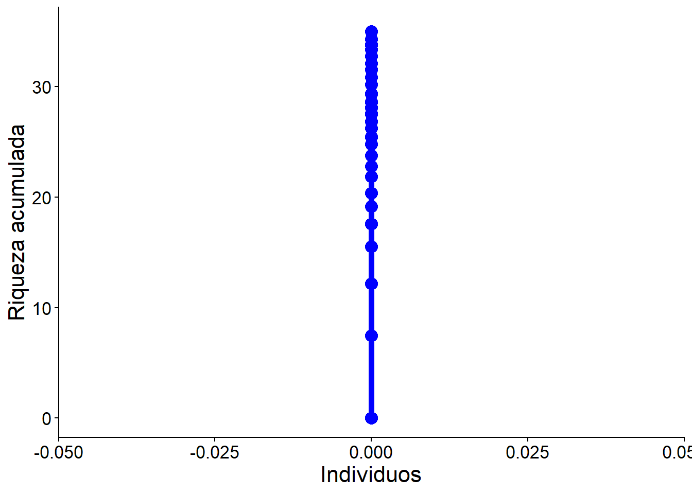

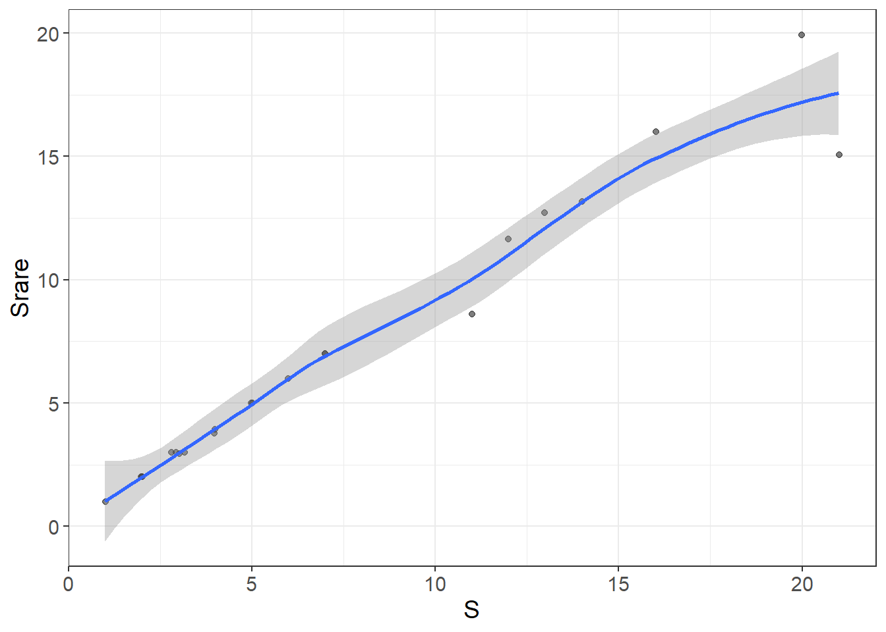
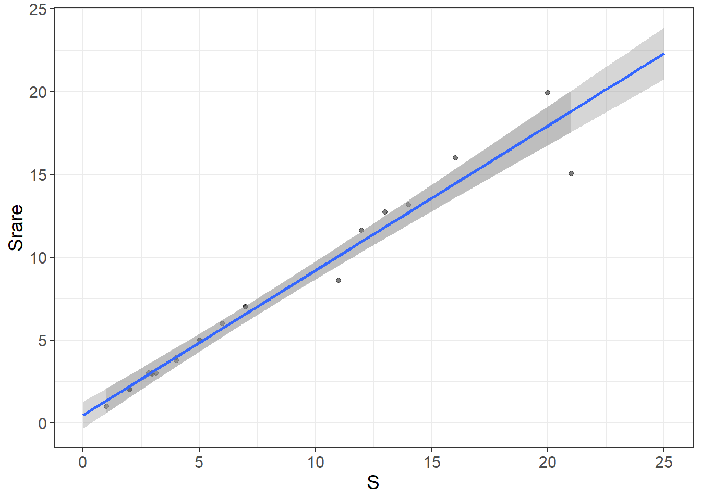

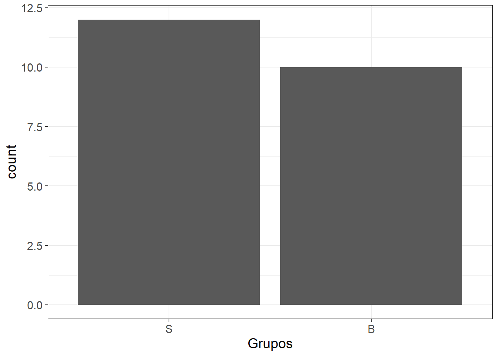
15.4 TESTE SEUS CONHECIMENTOS
NOTA
Baixe esse arquivo de atividade sobre correlação e regressão R (LISTA DE EXERCÍCIOS) e responda às questões. Se achar necessário, insira “chunks” de scripts do R, prints de tela ou cópias de gráficos, resultados ou mensagens de erro.
NOTA
Baixe esse arquivo de exercício e resolva as questões no R (Exercício 5).
Sites para consulta
https://stackoverflow.com/questions/31741742/how-to-identify-the-distribution-of-the-given-data-using-r
https://stats.stackexchange.com/questions/132652/how-to-determine-which-distribution-fits-my-data-best
https://www.r-bloggers.com/2015/11/correlation-and-linear-regression/
https://bedeffinianrowedavies.com/statisticstutorials/introductionglms